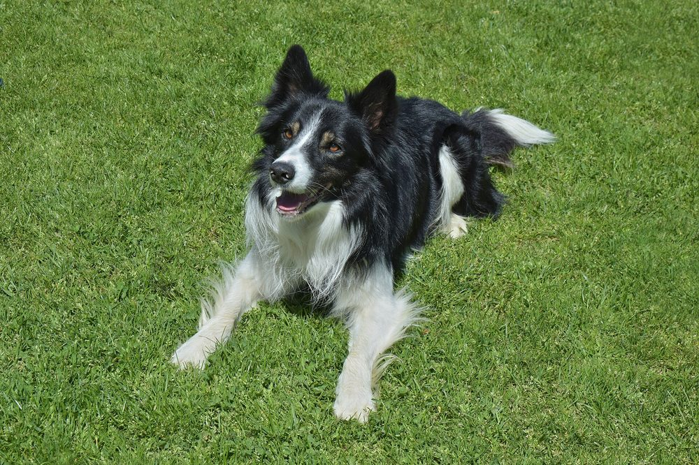
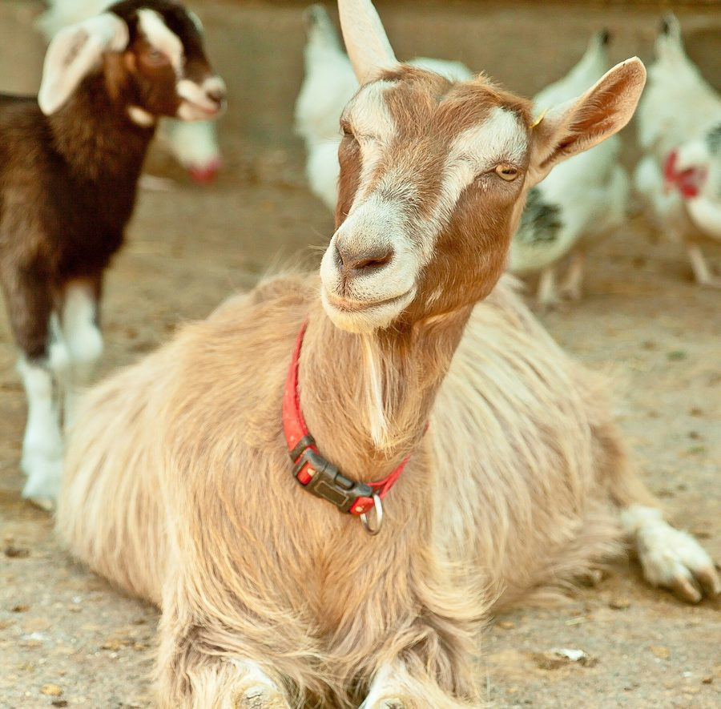
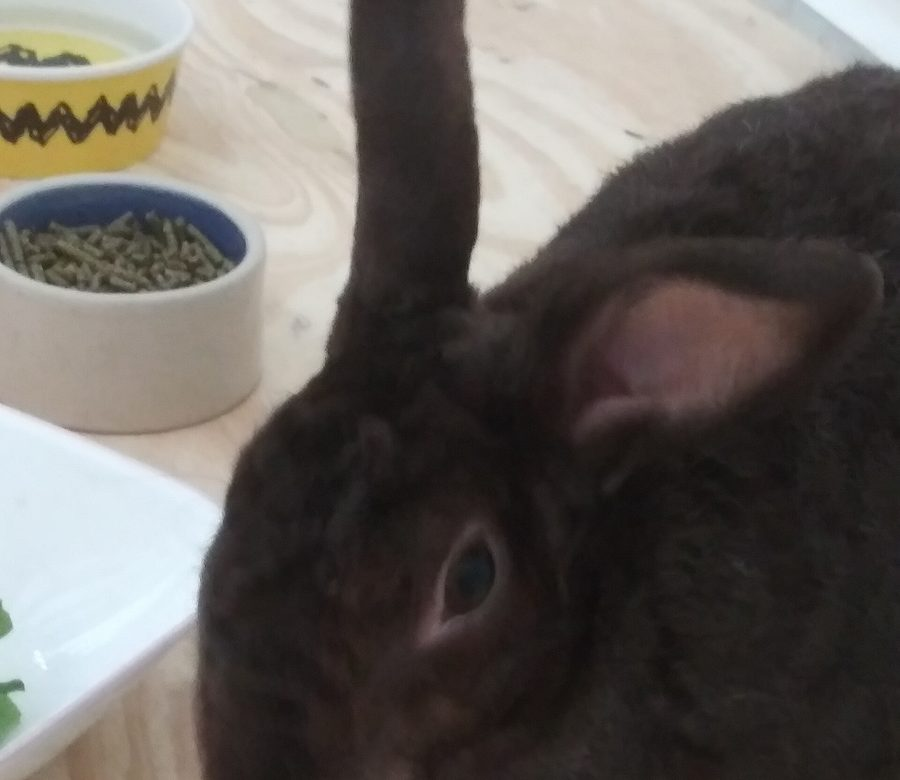

Animaux soignés
Des chats aux vaches, sans spécialité imposée
En préventif pour le confort de vie toute l'année, ou en curatif quand quelque chose ne va pas. L'ostéopathie complète le suivi vétérinaire, elle ne le remplace pas.

Chiens
Raideurs, boiteries, sportifs, seniors.

Chats
Oui, les chats aussi ont le droit d'avoir mal au dos.

Animaux de rente
Vaches, chèvres, moutons, volailles.

NAC
Lapins et autres petits compagnons.